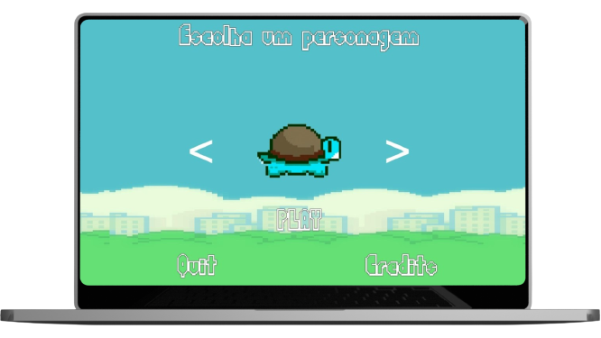

That Is
Flappy Game
O objetivo é alcançar a maior pontuação possível, superando seus próprios recordes. Com gráficos simples e intuitivos, Flappy Game oferece uma experiência de jogo envolvente e viciante.

Flappy Game
O objetivo é alcançar a maior pontuação possível, superando seus próprios recordes. Com gráficos simples e intuitivos, Flappy Game oferece uma experiência de jogo envolvente e viciante.
O jogo "Flappy Game" foi inspirado no jogo Flap Bird, um jogo eletrônico para dispositivos móveis de 2013 desenvolvido em Hanói pelo programador vietnamita Nguyễn Hà Đông e publicado pela .GEARS studios. O jogo foi retirado do ar, uma vez que o criador do game afirmou em entrevista à "Forbes" que "ele se tornou um produto viciante" e isso "virou um problema". A proposta do "Flappy Game" é trazer nostalgia aos usuários e possibitar que "matem a saudade" deste jogo que marcou uma geração. O Flappy foi desenvlvido por alunos da terceira fase do curso Engenharia de Software na Instituição de Ensino Católica de Santa Catarina, com orientação do professor Claudinei Dias.